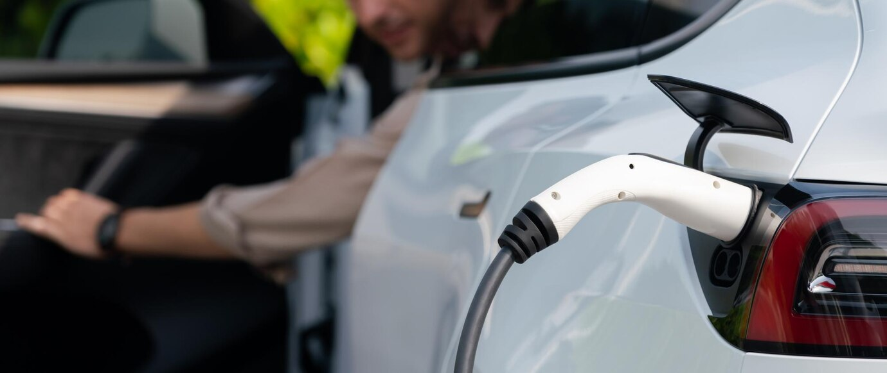
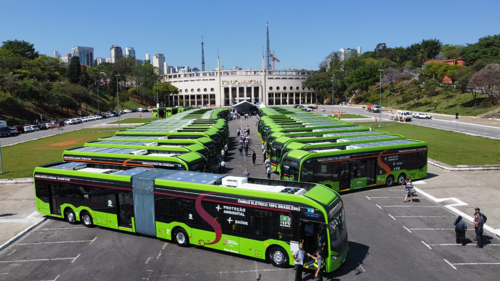

Carros Elétricos
O que são carros elétricos?
Os carros elétricos são veículos que utilizam motores elétricos alimentados por baterias recarregáveis em vez de motores de combustão interna. Eles operam com zero emissões diretas de poluentes durante a condução, uma vez que não queimam combustíveis fósseis. Em vez disso, convertem energia elétrica armazenada nas baterias em energia mecânica para propulsionar o veículo. Esta forma de transporte é uma alternativa sustentável e eficiente aos veículos tradicionais movidos a gasolina ou diesel, contribuindo para a redução da poluição atmosférica e das emissões de gases de efeito estufa.
Qual é a autonomia deles?
Em termos gerais, os carros elétricos mais recentes e avançados podem ter autonomias que variam de cerca de 320 a 640 Km com uma única carga, claro que alguns fatores podem influenciar na autonomia em si, assim como capacidade da bateria, modelo do veículo, condições de uso, estilo de condução e etc. Pegando um modelo como base, o novo elétrico da BYD, o BYD Dolphin Mini a uma autonomia de 405km com apenas uma carga.
Consumo
Vamos usar o modelo citado acima para referência de consumo, o BYD Dolphin Min atualmente é o carro com a maior eficiência energética a venda no Brasil, assim sendo o carro mais econômico a venda no Brasil até o momento, considerando uma tarifa de R$=0,85kWh e tendo uma eficiência de 0,41MJ/Km ele faz 1 km por R$=0,09. A bateria do Dolphin Mini tem a capacidade de 38kWh para uma carga completa considerando os dados acima é obtido a carga completa por R$=32,30.
Trens elétricos
O que são trens elétricos
Um trem elétrico é um tipo de trem que é alimentado por eletricidade em vez de combustíveis fósseis, como diesel ou carvão. A eletricidade é fornecida a partir de uma fonte externa, como cabos aéreos (catenárias) ou trilhos eletrificados. Os trens elétricos são comuns em muitos sistemas ferroviários urbanos e suburbanos devido à sua eficiência energética e à redução da poluição em áreas densamente povoadas. Eles também podem ser encontrados em linhas de longa distância, especialmente em países onde a eletrificação ferroviária é prevalente.
Trens elétricos em São Paulo
Está em construção os monotrilhos para entrega do trens elétricos em São Paulo produzidos pela BYD, são os BYD Skyrail. E será a linha 17 ouro.
A Linha 17-Ouro idealizada para operar no sistema monotrilho, estabelece a ligação do Aeroporto de Congonhas à rede metroferroviária, formando uma ligação perimetral entre as regiões sul e sudoeste, articulando todo o sistema sobre trilhos nessas regiões, assim como os principais corredores de ônibus.
O sistema monotrilho é um transporte de média capacidade, que opera sobre pneus, em via elevada (entre 12 e 15 metros de altura, dependendo do trecho) e utiliza tecnologia driverless (operação autônoma sem a presença de condutor). Os veículos são equipados com câmeras no interior dos carros, gravação de imagens, passagem livre entre os carros e ar condicionado.
Quais são as vantagens?
- Mesma qualidade de serviços do Metrô subterrâneo.
- Diminuição da poluição atmosférica.
- Conforto e rapidez nas viagens.
- Menor tempo nos deslocamentos.
- Maior integração entre os bairros.
- Melhoria no trânsito.
- Aumento da mobilidade.
- Ampliação dos investimentos na região.
- Geração de novos empregos.
- Geração de novos polos de comércio e serviços
Ônibus elétrico
O que são ônibus elétricos?
Um ônibus elétrico é um veículo de transporte público movido a eletricidade, projetado para operar de forma sustentável. Em contraste com ônibus tradicionais movidos a combustíveis fósseis, como diesel ou gás natural, os ônibus elétricos utilizam tecnologias de propulsão elétrica, como baterias recarregáveis, catenárias (fios aéreos) ou sistemas híbridos. Esses ônibus oferecem benefícios significativos, incluindo redução das emissões de poluentes e gases de efeito estufa, operação mais silenciosa e menor dependência de combustíveis não renováveis. Eles desempenham um papel crucial na transição para um transporte público mais limpo e sustentável em áreas urbanas e suburbanas.
Temos ônibus elétricos no Brasil?
Dados de dezembro de 2023 de acordo com o site E-Bus Radar temos 444 ônibus elétricos rodando pelo país, sendo 269 de São Paulo. Assim conseguindo evitar 53,00 kt de emissões de CO2 por ano.
Consumo
Em termos gerais, os ônibus elétricos mais recentes e avançados podem ter autonomias que variam de cerca de 250 a 300 Km com uma única carga, claro que alguns fatores podem influenciar na autonomia em si, assim como capacidade da bateria, modelo do veículo, condições de uso, estilo de condução e etc. Atualmente são 3 empresas que realizam a fabricação aqui no Brasil, Eletra, BYD, Outros.
Meios de Transporte Alternativos
Os meios de transporte alternativos são os métodos de deslocamento que oferecem outras alternativas aos modos convencionais, como carros, motocicletas, ônibus e trens. Geralmente são meios de transporte de menor impacto ambiental e que, além disso, possibilitam um estilo de vida mais saudável, como é o caso das bicicletas. Possibilitando, assim como os meios tradicionais, o transporte urbano em muitos dos cenários do cotidiano.
Bicicleta (bike)
A bicicleta (bike) é um veículo de duas rodas que utiliza como combustível apenas a força do condutor para girar o pedal, ou seja, emitindo 0 gases poluentes e promovendo o bem-estar físico. Existem diversos tipos de bike para os mais diversos perfis, como as MTB que são para trilhas, as speed, comumente utilizadas para prática do ciclismo, e até mesmo para praticar manobras, como é o caso das BMX. Entre esses tipos de bike, com certeza a ideal para o dia-dia é a urbana ou híbrida, seja para dar uma volta pelo bairro, ou também para o transporte urbano convencional, para ir à escola, faculdade ou trabalho. Esse tipo pode oferecer maior ergonomia e conforto para tal finalidade.

Bicicleta elétrica
Uma das barreiras comuns enfrentadas pelos ciclistas ao utilizar bicicletas convencionais é o cansaço. O esforço físico exigido, principalmente em trajetos mais longos ou com subidas íngremes, pode ser desafiador para muitas pessoas. Nesse contexto, a bicicleta elétrica surge como uma solução, tornando o deslocamento urbano não apenas mais prático, mas também menos cansativo. As bikes elétricas integram um sistema de assistência elétrica alimentado por uma bateria recarregável, a bicicleta elétrica oferece um impulso adicional aos pedais, reduzindo significativamente o esforço necessário durante o percurso. Essa combinação de energia elétrica e mecânica não só torna as subidas mais acessíveis, mas também permite que os ciclistas percorram distâncias mais longas com facilidade, expandindo as possibilidades de exploração e mobilidade. A autonomia das bicicletas elétricas varia conforme o modelo e as condições de uso, podendo atingir até 60 km com uma única carga em alguns modelos de alta performance. Essa ampla autonomia proporciona aos ciclistas a liberdade de realizar viagens mais longas sem se preocupar com a capacidade da bateria, oferecendo uma experiência de pedalada versátil e confortável.

Patinete Elétrico
Outro meio de transporte alternativo que vem ganhando cada vez mais popularidade é o patinete elétrico. Em comparação com a bicicleta elétrica, o patinete elétrico oferece uma experiência de deslocamento ainda mais conveniente, pois não requer nenhum esforço físico por parte do condutor, sendo totalmente impulsionado pelo motor elétrico. Com uma autonomia que pode atingir até 35 km em determinados modelos, como o Two Dogs tradicional, equipado com um potente motor de 1000 W, os patinetes elétricos se destacam como uma escolha ideal para viagens de curta distância. Essa extensão de alcance torna-os particularmente adequados para deslocamentos urbanos diários, como ir ao trabalho, à escola ou para atividades de lazer próximas. Além disso, os patinetes elétricos oferecem uma experiência de condução ágil e intuitiva, permitindo navegar facilmente por ruas movimentadas e congestionadas. Sua capacidade de manobra e estacionamento fácil os tornam uma opção prática e eficiente para quem busca mobilidade urbana rápida e livre de estresse.

Monociclo elétrico
O monociclo elétrico é um tipo de veículo de apenas uma roda que funciona com um motor elétrico, e vem ganhando grande espaço na mobilidade urbana nos últimos tempos, principalmente por ser simples de usar e possuir uma boa autonomia. Além disso, é um veículo pequeno, tornando-o fácil de guardar e transportar. Ele funciona basicamente com os movimentos do corpo do condutor para ir para frente, frear e fazer curvas, sendo indispensável uma boa consciência corporal para uma condução excelente. Os monociclos elétricos no geral podem ter uma autonomia de até 50km com uma única carga, dependendo do modelo, das condições de uso, da bateria etc. Além disso, pode atingir até 30km/h, tornando uma opção rápida e eficiente para trajetos mais curtos.